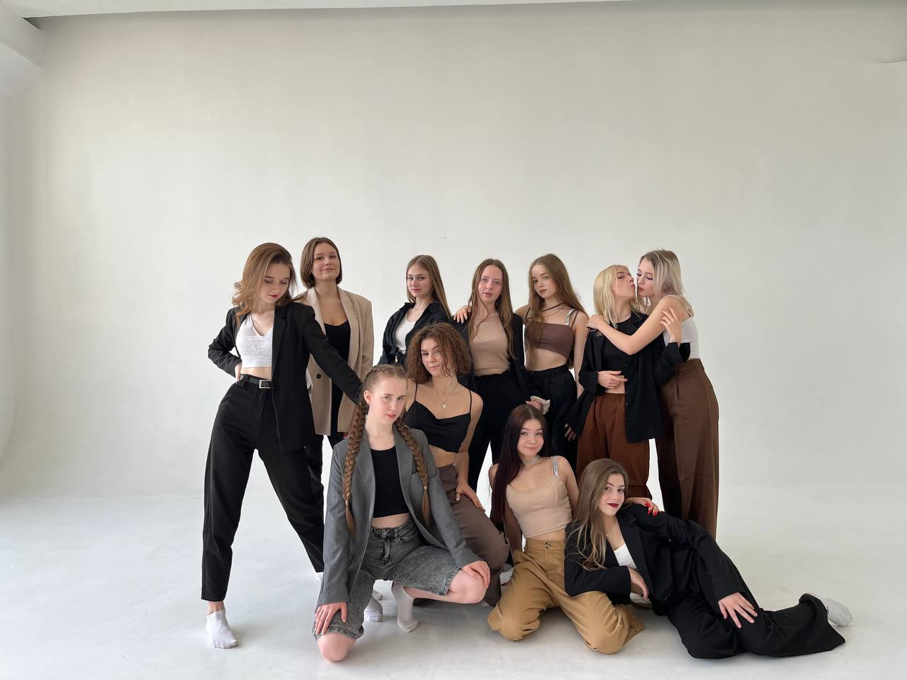
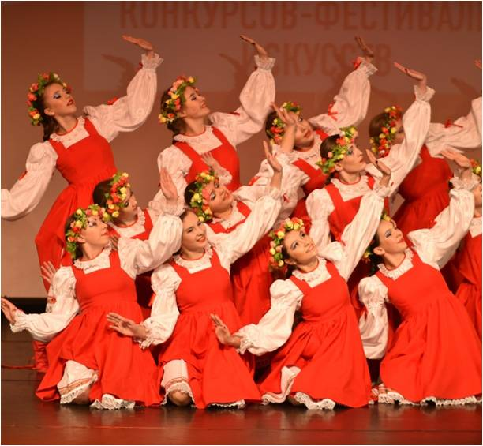

В 5 лет моя момми отдала меня на танцы, вот до сих пор я ими занимаюсь, и могу сказать,что это моё хобби. 10 лет я танцевала в одном коллективе,но потом в один момент большинство людей ушло и стало уже совсем не то, что было, поэтому я покинула этот замечательный коллектив. С ними мы ездиди в разные города, например, Москва, Ярославль, Питер, Адлер и тд, на танцевальные конкурсы, выигрывали призовые места, гранд-при. После того, как ушла из коллектива, пошла в другой, мы никуда не ездеем, а тунцуем просто для себя.